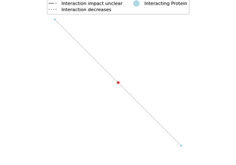

Impact on protein interaction and regulatory networks#
Kinase substrate enrichment analysis (KSEA)
Kinase substrate enrichment analysis (KSEA)

Protein interactions network
Identify kinases with enriched substrates in differentially included exons, using an adapted version of KSTAR